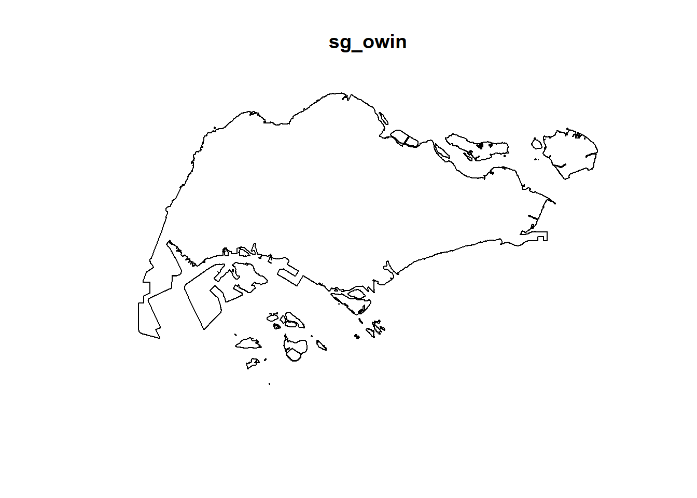
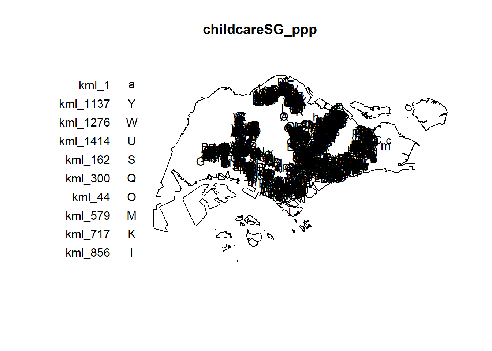
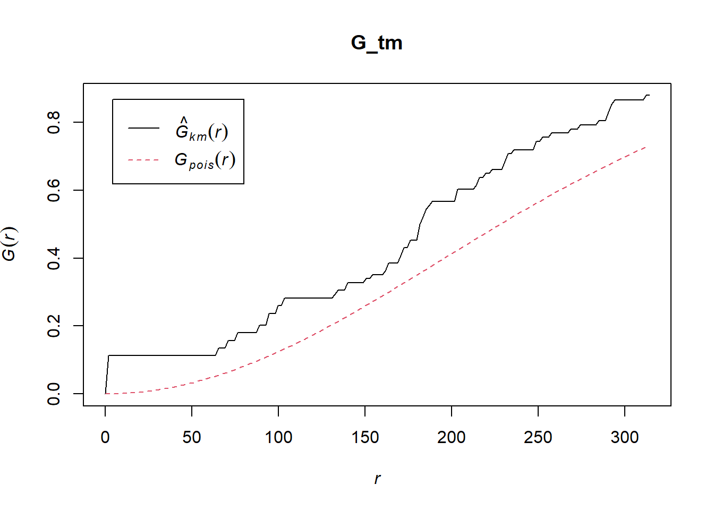
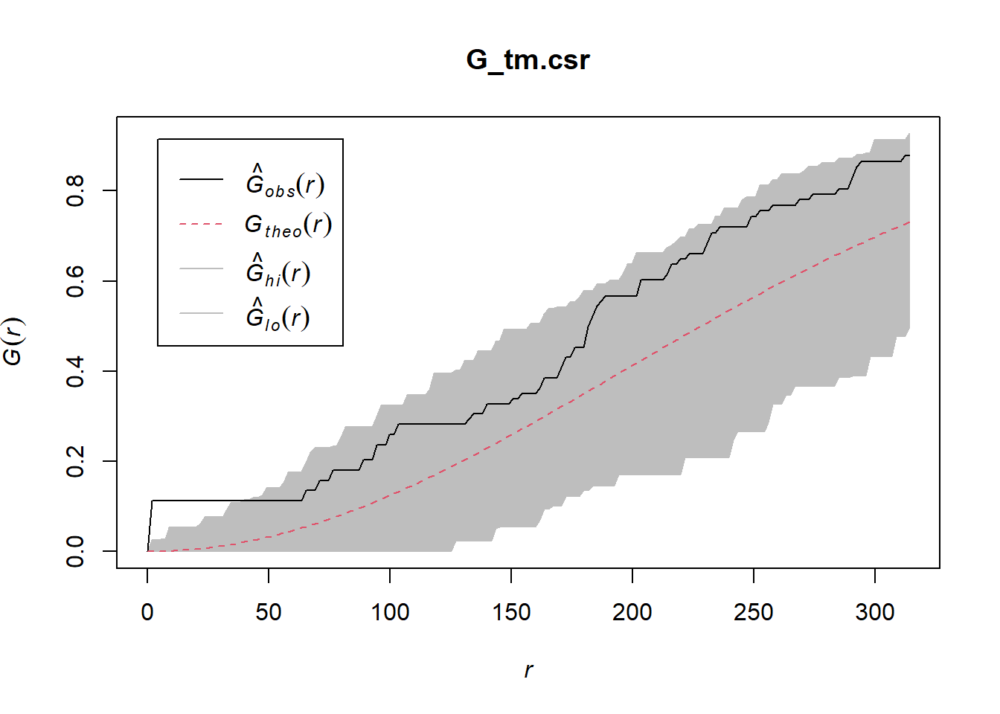
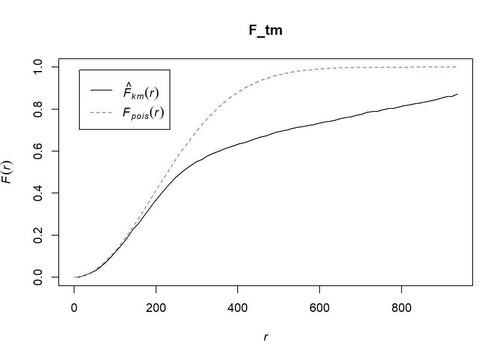
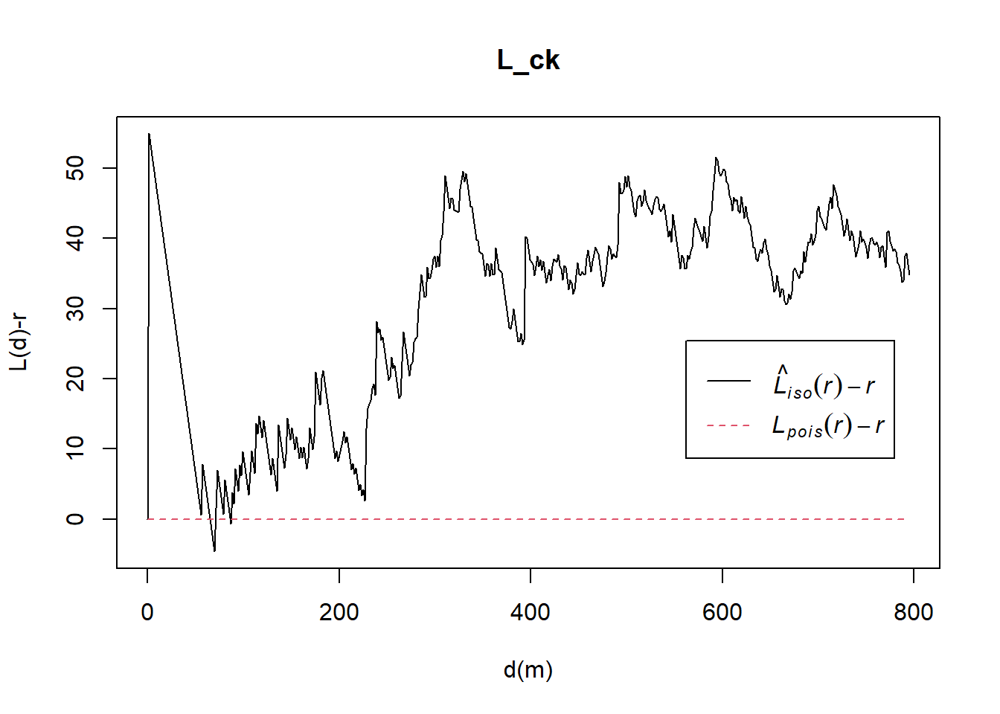

pacman::p_load(sf, raster, spatstat, tmap, tidyverse)Second Order Spatial Point Pattern Analysis Methods
In this hands-on exercise, we continue learning about Spatial Point pattern analysis with the help of spatstat package. We continue looking at the dataset using the location of childcare centres in Singapore.
This exercise is based on Chapter 5 of Dr Kam’s online book which can be accessed here.
Getting Started
Data Sources
Data for this exercise are from public sources and are the same as the previous hands-on exercise. This includes:
Location and attribute information of childcare centres in Singapore from data.gov.sg
Master Plan 2014 Subzone Boundary from data.gov.sg
National boundary of Singapore provided in SLA and ESRI shapefile format
Installing and launching R packages
This exercise will make use of five R packages: sf, tidyverse, spatstat, raster and tmap.
sf - for importing, managing and processing vector-based geospatial data
tidyverse - collection of packages for performing data importation, wrangling and visualization
tmap - for plotting cartographic quality maps
spatstat - offers a wide range of functions for point pattern analysis (PPA)
raster - for reading, writing, manipulating and analysing models of gridded spatial data
The code chunk below uses p_load() of pacman package to check if the packages are installed in the computer. It installs them first if they are not. It then loads them into R.
Spatial Data Wrangling
Importing the spatial data
The code chunk below uses st_read() from the sf package to import the geospatial datasets.
childcare_sf <- st_read("data/geospatial/child-care-services-geojson.geojson") %>% st_transform(crs = 3414)Reading layer `child-care-services-geojson' from data source
`C:\drkrodriguez\ISSS626-GAA\Hands-on\Hands-On_Ex04\data\geospatial\child-care-services-geojson.geojson'
using driver `GeoJSON'
Simple feature collection with 1545 features and 2 fields
Geometry type: POINT
Dimension: XYZ
Bounding box: xmin: 103.6824 ymin: 1.248403 xmax: 103.9897 ymax: 1.462134
z_range: zmin: 0 zmax: 0
Geodetic CRS: WGS 84sg_sf <- st_read(dsn = "data/geospatial", layer="CostalOutline")Reading layer `CostalOutline' from data source
`C:\drkrodriguez\ISSS626-GAA\Hands-on\Hands-On_Ex04\data\geospatial'
using driver `ESRI Shapefile'
Simple feature collection with 60 features and 4 fields
Geometry type: POLYGON
Dimension: XY
Bounding box: xmin: 2663.926 ymin: 16357.98 xmax: 56047.79 ymax: 50244.03
Projected CRS: SVY21mpsz_sf <- st_read(dsn = "data/geospatial",
layer = "MP14_SUBZONE_WEB_PL")Reading layer `MP14_SUBZONE_WEB_PL' from data source
`C:\drkrodriguez\ISSS626-GAA\Hands-on\Hands-On_Ex04\data\geospatial'
using driver `ESRI Shapefile'
Simple feature collection with 323 features and 15 fields
Geometry type: MULTIPOLYGON
Dimension: XY
Bounding box: xmin: 2667.538 ymin: 15748.72 xmax: 56396.44 ymax: 50256.33
Projected CRS: SVY21Checking and converting projection systems
We can use st_crs() to check what coordinate systems are used in each of the three sf dataframes.
childcare_sf is in SVY21 using EPSG code 3414 after our load and transform operation above. However, sg_sf and mpsz_sf reveals that they are not using the correct EPSG code.
Coordinate Reference System:
User input: EPSG:3414
wkt:
PROJCRS["SVY21 / Singapore TM",
BASEGEOGCRS["SVY21",
DATUM["SVY21",
ELLIPSOID["WGS 84",6378137,298.257223563,
LENGTHUNIT["metre",1]]],
PRIMEM["Greenwich",0,
ANGLEUNIT["degree",0.0174532925199433]],
ID["EPSG",4757]],
CONVERSION["Singapore Transverse Mercator",
METHOD["Transverse Mercator",
ID["EPSG",9807]],
PARAMETER["Latitude of natural origin",1.36666666666667,
ANGLEUNIT["degree",0.0174532925199433],
ID["EPSG",8801]],
PARAMETER["Longitude of natural origin",103.833333333333,
ANGLEUNIT["degree",0.0174532925199433],
ID["EPSG",8802]],
PARAMETER["Scale factor at natural origin",1,
SCALEUNIT["unity",1],
ID["EPSG",8805]],
PARAMETER["False easting",28001.642,
LENGTHUNIT["metre",1],
ID["EPSG",8806]],
PARAMETER["False northing",38744.572,
LENGTHUNIT["metre",1],
ID["EPSG",8807]]],
CS[Cartesian,2],
AXIS["northing (N)",north,
ORDER[1],
LENGTHUNIT["metre",1]],
AXIS["easting (E)",east,
ORDER[2],
LENGTHUNIT["metre",1]],
USAGE[
SCOPE["Cadastre, engineering survey, topographic mapping."],
AREA["Singapore - onshore and offshore."],
BBOX[1.13,103.59,1.47,104.07]],
ID["EPSG",3414]]st_crs(sg_sf)Coordinate Reference System:
User input: SVY21
wkt:
PROJCRS["SVY21",
BASEGEOGCRS["SVY21[WGS84]",
DATUM["World Geodetic System 1984",
ELLIPSOID["WGS 84",6378137,298.257223563,
LENGTHUNIT["metre",1]],
ID["EPSG",6326]],
PRIMEM["Greenwich",0,
ANGLEUNIT["Degree",0.0174532925199433]]],
CONVERSION["unnamed",
METHOD["Transverse Mercator",
ID["EPSG",9807]],
PARAMETER["Latitude of natural origin",1.36666666666667,
ANGLEUNIT["Degree",0.0174532925199433],
ID["EPSG",8801]],
PARAMETER["Longitude of natural origin",103.833333333333,
ANGLEUNIT["Degree",0.0174532925199433],
ID["EPSG",8802]],
PARAMETER["Scale factor at natural origin",1,
SCALEUNIT["unity",1],
ID["EPSG",8805]],
PARAMETER["False easting",28001.642,
LENGTHUNIT["metre",1],
ID["EPSG",8806]],
PARAMETER["False northing",38744.572,
LENGTHUNIT["metre",1],
ID["EPSG",8807]]],
CS[Cartesian,2],
AXIS["(E)",east,
ORDER[1],
LENGTHUNIT["metre",1,
ID["EPSG",9001]]],
AXIS["(N)",north,
ORDER[2],
LENGTHUNIT["metre",1,
ID["EPSG",9001]]]]st_crs(mpsz_sf)Coordinate Reference System:
User input: SVY21
wkt:
PROJCRS["SVY21",
BASEGEOGCRS["SVY21[WGS84]",
DATUM["World Geodetic System 1984",
ELLIPSOID["WGS 84",6378137,298.257223563,
LENGTHUNIT["metre",1]],
ID["EPSG",6326]],
PRIMEM["Greenwich",0,
ANGLEUNIT["Degree",0.0174532925199433]]],
CONVERSION["unnamed",
METHOD["Transverse Mercator",
ID["EPSG",9807]],
PARAMETER["Latitude of natural origin",1.36666666666667,
ANGLEUNIT["Degree",0.0174532925199433],
ID["EPSG",8801]],
PARAMETER["Longitude of natural origin",103.833333333333,
ANGLEUNIT["Degree",0.0174532925199433],
ID["EPSG",8802]],
PARAMETER["Scale factor at natural origin",1,
SCALEUNIT["unity",1],
ID["EPSG",8805]],
PARAMETER["False easting",28001.642,
LENGTHUNIT["metre",1],
ID["EPSG",8806]],
PARAMETER["False northing",38744.572,
LENGTHUNIT["metre",1],
ID["EPSG",8807]]],
CS[Cartesian,2],
AXIS["(E)",east,
ORDER[1],
LENGTHUNIT["metre",1,
ID["EPSG",9001]]],
AXIS["(N)",north,
ORDER[2],
LENGTHUNIT["metre",1,
ID["EPSG",9001]]]]We use the code chunk below to update the EPSG code for the last two objects
sg_sf = st_set_crs(sg_sf, 3414)Warning: st_crs<- : replacing crs does not reproject data; use st_transform for
thatmpsz_sf = st_set_crs(mpsz_sf, 3414)Warning: st_crs<- : replacing crs does not reproject data; use st_transform for
thatMapping the geospatial datasets
It is always good practice to plot or display imported data to check that they have been loaded and transformed properly. The code chunk below creates a map using tmap with all three objects where they appear to be mapped properly.
tm_shape(sg_sf)+
tm_fill("lightblue") +
tm_borders(lwd = 0.1, alpha = 1)+
tm_shape(mpsz_sf) +
tm_fill("grey", alpha = 0.5) +
tm_borders(lwd = 0.1, alpha = 1) +
tm_shape(childcare_sf) +
tm_dots(col = "darkgreen")Geospatial Data Wrangling
Converting sf dataframe sp spatial class
The code chunk below converts the three dataframes using as_Spatial() from the sf package.
childcare <- as_Spatial(childcare_sf)
mpsz <- as_Spatial(mpsz_sf)
sg <- as_Spatial(sg_sf)We can check the contents of the new dataframes by calling them. This confirms that they are in the spatial* class format.
childcareclass : SpatialPointsDataFrame
features : 1545
extent : 11203.01, 45404.24, 25667.6, 49300.88 (xmin, xmax, ymin, ymax)
crs : +proj=tmerc +lat_0=1.36666666666667 +lon_0=103.833333333333 +k=1 +x_0=28001.642 +y_0=38744.572 +ellps=WGS84 +towgs84=0,0,0,0,0,0,0 +units=m +no_defs
variables : 2
names : Name, Description
min values : kml_1, <center><table><tr><th colspan='2' align='center'><em>Attributes</em></th></tr><tr bgcolor="#E3E3F3"> <th>ADDRESSBLOCKHOUSENUMBER</th> <td></td> </tr><tr bgcolor=""> <th>ADDRESSBUILDINGNAME</th> <td></td> </tr><tr bgcolor="#E3E3F3"> <th>ADDRESSPOSTALCODE</th> <td>018989</td> </tr><tr bgcolor=""> <th>ADDRESSSTREETNAME</th> <td>1, MARINA BOULEVARD, #B1 - 01, ONE MARINA BOULEVARD, SINGAPORE 018989</td> </tr><tr bgcolor="#E3E3F3"> <th>ADDRESSTYPE</th> <td></td> </tr><tr bgcolor=""> <th>DESCRIPTION</th> <td></td> </tr><tr bgcolor="#E3E3F3"> <th>HYPERLINK</th> <td></td> </tr><tr bgcolor=""> <th>LANDXADDRESSPOINT</th> <td>0</td> </tr><tr bgcolor="#E3E3F3"> <th>LANDYADDRESSPOINT</th> <td>0</td> </tr><tr bgcolor=""> <th>NAME</th> <td>THE LITTLE SKOOL-HOUSE INTERNATIONAL PTE. LTD.</td> </tr><tr bgcolor="#E3E3F3"> <th>PHOTOURL</th> <td></td> </tr><tr bgcolor=""> <th>ADDRESSFLOORNUMBER</th> <td></td> </tr><tr bgcolor="#E3E3F3"> <th>INC_CRC</th> <td>08F73931F4A691F4</td> </tr><tr bgcolor=""> <th>FMEL_UPD_D</th> <td>20200826094036</td> </tr><tr bgcolor="#E3E3F3"> <th>ADDRESSUNITNUMBER</th> <td></td> </tr></table></center>
max values : kml_999, <center><table><tr><th colspan='2' align='center'><em>Attributes</em></th></tr><tr bgcolor="#E3E3F3"> <th>ADDRESSBLOCKHOUSENUMBER</th> <td></td> </tr><tr bgcolor=""> <th>ADDRESSBUILDINGNAME</th> <td></td> </tr><tr bgcolor="#E3E3F3"> <th>ADDRESSPOSTALCODE</th> <td>829646</td> </tr><tr bgcolor=""> <th>ADDRESSSTREETNAME</th> <td>200, PONGGOL SEVENTEENTH AVENUE, SINGAPORE 829646</td> </tr><tr bgcolor="#E3E3F3"> <th>ADDRESSTYPE</th> <td></td> </tr><tr bgcolor=""> <th>DESCRIPTION</th> <td>Child Care Services</td> </tr><tr bgcolor="#E3E3F3"> <th>HYPERLINK</th> <td></td> </tr><tr bgcolor=""> <th>LANDXADDRESSPOINT</th> <td>0</td> </tr><tr bgcolor="#E3E3F3"> <th>LANDYADDRESSPOINT</th> <td>0</td> </tr><tr bgcolor=""> <th>NAME</th> <td>RAFFLES KIDZ @ PUNGGOL PTE LTD</td> </tr><tr bgcolor="#E3E3F3"> <th>PHOTOURL</th> <td></td> </tr><tr bgcolor=""> <th>ADDRESSFLOORNUMBER</th> <td></td> </tr><tr bgcolor="#E3E3F3"> <th>INC_CRC</th> <td>379D017BF244B0FA</td> </tr><tr bgcolor=""> <th>FMEL_UPD_D</th> <td>20200826094036</td> </tr><tr bgcolor="#E3E3F3"> <th>ADDRESSUNITNUMBER</th> <td></td> </tr></table></center> Converting the spatial class to generic sp format
spatstat requires that the data is in ppp object form. There is no direct way to do this from spatial* class. We need to convert spatial* class to a spatial object first.
The code chunk below transform two of the spatial* objects into generic sp objects.
childcare_sp <- as(childcare, "SpatialPoints")
sg_sp <- as(sg, "SpatialPolygons")Calling childcare_sp and sg_sp lets us check their properties.
childcare_spclass : SpatialPoints
features : 1545
extent : 11203.01, 45404.24, 25667.6, 49300.88 (xmin, xmax, ymin, ymax)
crs : +proj=tmerc +lat_0=1.36666666666667 +lon_0=103.833333333333 +k=1 +x_0=28001.642 +y_0=38744.572 +ellps=WGS84 +towgs84=0,0,0,0,0,0,0 +units=m +no_defs sg_spclass : SpatialPolygons
features : 60
extent : 2663.926, 56047.79, 16357.98, 50244.03 (xmin, xmax, ymin, ymax)
crs : +proj=tmerc +lat_0=1.36666666666667 +lon_0=103.833333333333 +k=1 +x_0=28001.642 +y_0=38744.572 +ellps=WGS84 +towgs84=0,0,0,0,0,0,0 +units=m +no_defs Converting generic sp format into spatstat’s ppp format
We will then use as.ppp() from spatstat package to convert the (spatial) data into spatstat’s ppp object format.
childcare_ppp <- as.ppp(childcare_sf)Warning in as.ppp.sf(childcare_sf): only first attribute column is used for
markschildcare_pppMarked planar point pattern: 1545 points
marks are of storage type 'character'
window: rectangle = [11203.01, 45404.24] x [25667.6, 49300.88] unitsWe see the difference of this format when we use plot() (from R Graphics) to produce a quick map of the data.
plot(childcare_ppp)Warning in default.charmap(ntypes, chars): Too many types to display every type
as a different characterWarning: Only 10 out of 1545 symbols are shown in the symbol map
We can see summary information on the new ppp object using the code chunk below.
summary(childcare_ppp)Marked planar point pattern: 1545 points
Average intensity 1.91145e-06 points per square unit
Coordinates are given to 11 decimal places
marks are of type 'character'
Summary:
Length Class Mode
1545 character character
Window: rectangle = [11203.01, 45404.24] x [25667.6, 49300.88] units
(34200 x 23630 units)
Window area = 808287000 square unitsHandling duplicated points
We can check duplication in a ppp object using the code chunk below.
any(duplicated(childcare_ppp))[1] FALSETo count the number of coincident points, we can use the multiplicity() function.
multiplicity(childcare_ppp) [1] 1 1 1 1 1 1 1 1 1 1 1 1 1 1 1 1 1 1 1 1 1 1 1 1 1 1 1 1 1 1 1 1 1 1 1 1 1
[38] 1 1 1 1 1 1 1 1 1 1 1 1 1 1 1 1 1 1 1 1 1 1 1 1 1 1 1 1 1 1 1 1 1 1 1 1 1
[75] 1 1 1 1 1 1 1 1 1 1 1 1 1 1 1 1 1 1 1 1 1 1 1 1 1 1 1 1 1 1 1 1 1 1 1 1 1
[112] 1 1 1 1 1 1 1 1 1 1 1 1 1 1 1 1 1 1 1 1 1 1 1 1 1 1 1 1 1 1 1 1 1 1 1 1 1
[149] 1 1 1 1 1 1 1 1 1 1 1 1 1 1 1 1 1 1 1 1 1 1 1 1 1 1 1 1 1 1 1 1 1 1 1 1 1
[186] 1 1 1 1 1 1 1 1 1 1 1 1 1 1 1 1 1 1 1 1 1 1 1 1 1 1 1 1 1 1 1 1 1 1 1 1 1
[223] 1 1 1 1 1 1 1 1 1 1 1 1 1 1 1 1 1 1 1 1 1 1 1 1 1 1 1 1 1 1 1 1 1 1 1 1 1
[260] 1 1 1 1 1 1 1 1 1 1 1 1 1 1 1 1 1 1 1 1 1 1 1 1 1 1 1 1 1 1 1 1 1 1 1 1 1
[297] 1 1 1 1 1 1 1 1 1 1 1 1 1 1 1 1 1 1 1 1 1 1 1 1 1 1 1 1 1 1 1 1 1 1 1 1 1
[334] 1 1 1 1 1 1 1 1 1 1 1 1 1 1 1 1 1 1 1 1 1 1 1 1 1 1 1 1 1 1 1 1 1 1 1 1 1
[371] 1 1 1 1 1 1 1 1 1 1 1 1 1 1 1 1 1 1 1 1 1 1 1 1 1 1 1 1 1 1 1 1 1 1 1 1 1
[408] 1 1 1 1 1 1 1 1 1 1 1 1 1 1 1 1 1 1 1 1 1 1 1 1 1 1 1 1 1 1 1 1 1 1 1 1 1
[445] 1 1 1 1 1 1 1 1 1 1 1 1 1 1 1 1 1 1 1 1 1 1 1 1 1 1 1 1 1 1 1 1 1 1 1 1 1
[482] 1 1 1 1 1 1 1 1 1 1 1 1 1 1 1 1 1 1 1 1 1 1 1 1 1 1 1 1 1 1 1 1 1 1 1 1 1
[519] 1 1 1 1 1 1 1 1 1 1 1 1 1 1 1 1 1 1 1 1 1 1 1 1 1 1 1 1 1 1 1 1 1 1 1 1 1
[556] 1 1 1 1 1 1 1 1 1 1 1 1 1 1 1 1 1 1 1 1 1 1 1 1 1 1 1 1 1 1 1 1 1 1 1 1 1
[593] 1 1 1 1 1 1 1 1 1 1 1 1 1 1 1 1 1 1 1 1 1 1 1 1 1 1 1 1 1 1 1 1 1 1 1 1 1
[630] 1 1 1 1 1 1 1 1 1 1 1 1 1 1 1 1 1 1 1 1 1 1 1 1 1 1 1 1 1 1 1 1 1 1 1 1 1
[667] 1 1 1 1 1 1 1 1 1 1 1 1 1 1 1 1 1 1 1 1 1 1 1 1 1 1 1 1 1 1 1 1 1 1 1 1 1
[704] 1 1 1 1 1 1 1 1 1 1 1 1 1 1 1 1 1 1 1 1 1 1 1 1 1 1 1 1 1 1 1 1 1 1 1 1 1
[741] 1 1 1 1 1 1 1 1 1 1 1 1 1 1 1 1 1 1 1 1 1 1 1 1 1 1 1 1 1 1 1 1 1 1 1 1 1
[778] 1 1 1 1 1 1 1 1 1 1 1 1 1 1 1 1 1 1 1 1 1 1 1 1 1 1 1 1 1 1 1 1 1 1 1 1 1
[815] 1 1 1 1 1 1 1 1 1 1 1 1 1 1 1 1 1 1 1 1 1 1 1 1 1 1 1 1 1 1 1 1 1 1 1 1 1
[852] 1 1 1 1 1 1 1 1 1 1 1 1 1 1 1 1 1 1 1 1 1 1 1 1 1 1 1 1 1 1 1 1 1 1 1 1 1
[889] 1 1 1 1 1 1 1 1 1 1 1 1 1 1 1 1 1 1 1 1 1 1 1 1 1 1 1 1 1 1 1 1 1 1 1 1 1
[926] 1 1 1 1 1 1 1 1 1 1 1 1 1 1 1 1 1 1 1 1 1 1 1 1 1 1 1 1 1 1 1 1 1 1 1 1 1
[963] 1 1 1 1 1 1 1 1 1 1 1 1 1 1 1 1 1 1 1 1 1 1 1 1 1 1 1 1 1 1 1 1 1 1 1 1 1
[1000] 1 1 1 1 1 1 1 1 1 1 1 1 1 1 1 1 1 1 1 1 1 1 1 1 1 1 1 1 1 1 1 1 1 1 1 1 1
[1037] 1 1 1 1 1 1 1 1 1 1 1 1 1 1 1 1 1 1 1 1 1 1 1 1 1 1 1 1 1 1 1 1 1 1 1 1 1
[1074] 1 1 1 1 1 1 1 1 1 1 1 1 1 1 1 1 1 1 1 1 1 1 1 1 1 1 1 1 1 1 1 1 1 1 1 1 1
[1111] 1 1 1 1 1 1 1 1 1 1 1 1 1 1 1 1 1 1 1 1 1 1 1 1 1 1 1 1 1 1 1 1 1 1 1 1 1
[1148] 1 1 1 1 1 1 1 1 1 1 1 1 1 1 1 1 1 1 1 1 1 1 1 1 1 1 1 1 1 1 1 1 1 1 1 1 1
[1185] 1 1 1 1 1 1 1 1 1 1 1 1 1 1 1 1 1 1 1 1 1 1 1 1 1 1 1 1 1 1 1 1 1 1 1 1 1
[1222] 1 1 1 1 1 1 1 1 1 1 1 1 1 1 1 1 1 1 1 1 1 1 1 1 1 1 1 1 1 1 1 1 1 1 1 1 1
[1259] 1 1 1 1 1 1 1 1 1 1 1 1 1 1 1 1 1 1 1 1 1 1 1 1 1 1 1 1 1 1 1 1 1 1 1 1 1
[1296] 1 1 1 1 1 1 1 1 1 1 1 1 1 1 1 1 1 1 1 1 1 1 1 1 1 1 1 1 1 1 1 1 1 1 1 1 1
[1333] 1 1 1 1 1 1 1 1 1 1 1 1 1 1 1 1 1 1 1 1 1 1 1 1 1 1 1 1 1 1 1 1 1 1 1 1 1
[1370] 1 1 1 1 1 1 1 1 1 1 1 1 1 1 1 1 1 1 1 1 1 1 1 1 1 1 1 1 1 1 1 1 1 1 1 1 1
[1407] 1 1 1 1 1 1 1 1 1 1 1 1 1 1 1 1 1 1 1 1 1 1 1 1 1 1 1 1 1 1 1 1 1 1 1 1 1
[1444] 1 1 1 1 1 1 1 1 1 1 1 1 1 1 1 1 1 1 1 1 1 1 1 1 1 1 1 1 1 1 1 1 1 1 1 1 1
[1481] 1 1 1 1 1 1 1 1 1 1 1 1 1 1 1 1 1 1 1 1 1 1 1 1 1 1 1 1 1 1 1 1 1 1 1 1 1
[1518] 1 1 1 1 1 1 1 1 1 1 1 1 1 1 1 1 1 1 1 1 1 1 1 1 1 1 1 1We can wrap this in sum() to count the number of locations with more than one event.
sum(multiplicity(childcare_ppp) > 1)[1] 0The outputs show that there are no duplication in childcare_ppp
Creating owin object
When analysing spatial point patterns, it is best to confine the analysis within a geographical area. In spatstat, the object that represents the bounded region is called an owin.
The code chunk below creates an owin based on the sg SpatialPolygon object.
sg_owin <- as.owin(sg_sf)The owin object can be displayed graphically using plot() and summarized using summary()
plot(sg_owin)
summary(sg_owin)Window: polygonal boundary
50 separate polygons (1 hole)
vertices area relative.area
polygon 1 (hole) 30 -7081.18 -9.76e-06
polygon 2 55 82537.90 1.14e-04
polygon 3 90 415092.00 5.72e-04
polygon 4 49 16698.60 2.30e-05
polygon 5 38 24249.20 3.34e-05
polygon 6 976 23344700.00 3.22e-02
polygon 7 721 1927950.00 2.66e-03
polygon 8 1992 9992170.00 1.38e-02
polygon 9 330 1118960.00 1.54e-03
polygon 10 175 925904.00 1.28e-03
polygon 11 115 928394.00 1.28e-03
polygon 12 24 6352.39 8.76e-06
polygon 13 190 202489.00 2.79e-04
polygon 14 37 10170.50 1.40e-05
polygon 15 25 16622.70 2.29e-05
polygon 16 10 2145.07 2.96e-06
polygon 17 66 16184.10 2.23e-05
polygon 18 5195 636837000.00 8.78e-01
polygon 19 76 312332.00 4.31e-04
polygon 20 627 31891300.00 4.40e-02
polygon 21 20 32842.00 4.53e-05
polygon 22 42 55831.70 7.70e-05
polygon 23 67 1313540.00 1.81e-03
polygon 24 734 4690930.00 6.47e-03
polygon 25 16 3194.60 4.40e-06
polygon 26 15 4872.96 6.72e-06
polygon 27 15 4464.20 6.15e-06
polygon 28 14 5466.74 7.54e-06
polygon 29 37 5261.94 7.25e-06
polygon 30 111 662927.00 9.14e-04
polygon 31 69 56313.40 7.76e-05
polygon 32 143 145139.00 2.00e-04
polygon 33 397 2488210.00 3.43e-03
polygon 34 90 115991.00 1.60e-04
polygon 35 98 62682.90 8.64e-05
polygon 36 165 338736.00 4.67e-04
polygon 37 130 94046.50 1.30e-04
polygon 38 93 430642.00 5.94e-04
polygon 39 16 2010.46 2.77e-06
polygon 40 415 3253840.00 4.49e-03
polygon 41 30 10838.20 1.49e-05
polygon 42 53 34400.30 4.74e-05
polygon 43 26 8347.58 1.15e-05
polygon 44 74 58223.40 8.03e-05
polygon 45 327 2169210.00 2.99e-03
polygon 46 177 467446.00 6.44e-04
polygon 47 46 699702.00 9.65e-04
polygon 48 6 16841.00 2.32e-05
polygon 49 13 70087.30 9.66e-05
polygon 50 4 9459.63 1.30e-05
enclosing rectangle: [2663.93, 56047.79] x [16357.98, 50244.03] units
(53380 x 33890 units)
Window area = 725376000 square units
Fraction of frame area: 0.401Combining point events object and owin object
In this last step, we extract childcare events (locations) that are within Singapore, as depicted by the owin, using the code chunk below.
childcareSG_ppp = childcare_ppp[sg_owin]The output is a combination of the point feature and the polygon feature into a single ppp object:
summary(childcareSG_ppp)Marked planar point pattern: 1545 points
Average intensity 2.129929e-06 points per square unit
Coordinates are given to 11 decimal places
marks are of type 'character'
Summary:
Length Class Mode
1545 character character
Window: polygonal boundary
50 separate polygons (1 hole)
vertices area relative.area
polygon 1 (hole) 30 -7081.18 -9.76e-06
polygon 2 55 82537.90 1.14e-04
polygon 3 90 415092.00 5.72e-04
polygon 4 49 16698.60 2.30e-05
polygon 5 38 24249.20 3.34e-05
polygon 6 976 23344700.00 3.22e-02
polygon 7 721 1927950.00 2.66e-03
polygon 8 1992 9992170.00 1.38e-02
polygon 9 330 1118960.00 1.54e-03
polygon 10 175 925904.00 1.28e-03
polygon 11 115 928394.00 1.28e-03
polygon 12 24 6352.39 8.76e-06
polygon 13 190 202489.00 2.79e-04
polygon 14 37 10170.50 1.40e-05
polygon 15 25 16622.70 2.29e-05
polygon 16 10 2145.07 2.96e-06
polygon 17 66 16184.10 2.23e-05
polygon 18 5195 636837000.00 8.78e-01
polygon 19 76 312332.00 4.31e-04
polygon 20 627 31891300.00 4.40e-02
polygon 21 20 32842.00 4.53e-05
polygon 22 42 55831.70 7.70e-05
polygon 23 67 1313540.00 1.81e-03
polygon 24 734 4690930.00 6.47e-03
polygon 25 16 3194.60 4.40e-06
polygon 26 15 4872.96 6.72e-06
polygon 27 15 4464.20 6.15e-06
polygon 28 14 5466.74 7.54e-06
polygon 29 37 5261.94 7.25e-06
polygon 30 111 662927.00 9.14e-04
polygon 31 69 56313.40 7.76e-05
polygon 32 143 145139.00 2.00e-04
polygon 33 397 2488210.00 3.43e-03
polygon 34 90 115991.00 1.60e-04
polygon 35 98 62682.90 8.64e-05
polygon 36 165 338736.00 4.67e-04
polygon 37 130 94046.50 1.30e-04
polygon 38 93 430642.00 5.94e-04
polygon 39 16 2010.46 2.77e-06
polygon 40 415 3253840.00 4.49e-03
polygon 41 30 10838.20 1.49e-05
polygon 42 53 34400.30 4.74e-05
polygon 43 26 8347.58 1.15e-05
polygon 44 74 58223.40 8.03e-05
polygon 45 327 2169210.00 2.99e-03
polygon 46 177 467446.00 6.44e-04
polygon 47 46 699702.00 9.65e-04
polygon 48 6 16841.00 2.32e-05
polygon 49 13 70087.30 9.66e-05
polygon 50 4 9459.63 1.30e-05
enclosing rectangle: [2663.93, 56047.79] x [16357.98, 50244.03] units
(53380 x 33890 units)
Window area = 725376000 square units
Fraction of frame area: 0.401Running plot() on this shows both the owin and the preschool locations in a single map.
plot(childcareSG_ppp)Warning in default.charmap(ntypes, chars): Too many types to display every type
as a different characterWarning: Only 10 out of 1545 symbols are shown in the symbol map
Extracting study areas
The code chunk below extracts the target planning areas from mpsz_sf
pg <- mpsz_sf %>%
filter(PLN_AREA_N == "PUNGGOL")
tm <- mpsz_sf %>%
filter(PLN_AREA_N == "TAMPINES")
ck <- mpsz_sf %>%
filter(PLN_AREA_N == "CHOA CHU KANG")
jw <- mpsz_sf %>%
filter(PLN_AREA_N == "JURONG WEST")The code chunks below plot the different target planning areas using tmap_arrange().
punggol <- tm_shape(pg) +
tm_polygons() + tm_layout(title = "Punggol")
cck <- tm_shape(ck) +
tm_polygons() + tm_layout(title = "Chua Chu Kang")
tampines <- tm_shape(tm) +
tm_polygons() + tm_layout(title = "Tampines")
jwest <- tm_shape(jw) +
tm_polygons() + tm_layout(title = "Jurong West")
tmap_arrange(punggol, tampines, cck, jwest, asp=2, ncol=2, nrow = 2)Converting target areas into owin objects
The code chunk below converts the four objeects into owin which is a requirement for analysing with spatstat
pg_owin = as.owin(pg)
tm_owin = as.owin(tm)
ck_owin = as.owin(ck)
jw_owin = as.owin(jw)Combining childcare points and the study area
The code chunk below extracts the childcare points/events that are within each of the target areas
childcare_pg_ppp = childcare_ppp[pg_owin]
childcare_tm_ppp = childcare_ppp[tm_owin]
childcare_ck_ppp = childcare_ppp[ck_owin]
childcare_jw_ppp = childcare_ppp[jw_owin]We use rescale.ppp() in the next code chunk to transform the unit of measure from meter to kilometer
childcare_pg_ppp.km = rescale.ppp(childcare_pg_ppp, 1000, "km")
childcare_tm_ppp.km = rescale.ppp(childcare_tm_ppp, 1000, "km")
childcare_ck_ppp.km = rescale.ppp(childcare_ck_ppp, 1000, "km")
childcare_jw_ppp.km = rescale.ppp(childcare_jw_ppp, 1000, "km")The code chunk below is used to plot the four target areas and the locations of their childcare centres
par(mfrow=c(2,2))
plot(childcare_pg_ppp.km, main="Punggol")Warning in default.charmap(ntypes, chars): Too many types to display every type
as a different characterWarning: Only 10 out of 61 symbols are shown in the symbol mapplot(childcare_tm_ppp.km, main="Tampines")Warning in default.charmap(ntypes, chars): Too many types to display every type
as a different characterWarning: Only 10 out of 89 symbols are shown in the symbol mapplot(childcare_ck_ppp.km, main="Choa Chu Kang")Warning in default.charmap(ntypes, chars): Too many types to display every type
as a different characterWarning: Only 10 out of 61 symbols are shown in the symbol mapplot(childcare_jw_ppp.km, main="Jurong West")Warning in default.charmap(ntypes, chars): Too many types to display every type
as a different characterWarning: Only 10 out of 88 symbols are shown in the symbol mapSecond-order Spatial Point Patterns Analysis
Analysing spatial point process using G function
The G function measures the distribution of distances from an arbitrary event to the nearest event. We will compute the G function using Gest() of the spatstat package. We will also perform monte carlo simulation using the envelope() function of the same package.
G-Function Estimation for Choa Chu Kang Planning Area
Computing the G function estimation
The code chunk below computes the G-function for the planning area using Gest()
G_CK = Gest(childcare_ck_ppp, correction = "border")
plot(G_CK, xlim=c(0,500))
Performing Complete Spatial Randomness (CSR) test
To confirm the observed spatial pattern, we conduct hypothesis testing. The test hypotheses for these are:
\(H_0\) - The locations of childcare service centres in Choa Chu Kang are randomly distributed
\(H_1\) - The locations of childcare service centres in Choa Chu Kang are not randomly distributed
For our testing, we will use a p-value smaller than α = 0.001 to reject the null hypothesis.
The code chunk below produces monte carlo simulation for the G-function values using envelope()
G_CK.csr <- envelope(childcare_ck_ppp, Gest, nsim = 999)Generating 999 simulations of CSR ...
1, 2, 3, ......10.........20.........30.........40.........50.........60..
.......70.........80.........90.........100.........110.........120.........130
.........140.........150.........160.........170.........180.........190........
.200.........210.........220.........230.........240.........250.........260......
...270.........280.........290.........300.........310.........320.........330....
.....340.........350.........360.........370.........380.........390.........400..
.......410.........420.........430.........440.........450.........460.........470
.........480.........490.........500.........510.........520.........530........
.540.........550.........560.........570.........580.........590.........600......
...610.........620.........630.........640.........650.........660.........670....
.....680.........690.........700.........710.........720.........730.........740..
.......750.........760.........770.........780.........790.........800.........810
.........820.........830.........840.........850.........860.........870........
.880.........890.........900.........910.........920.........930.........940......
...950.........960.........970.........980.........990........
999.
Done.We then plot the results using the code chunk below
plot(G_CK.csr)G Function Estimation for Tampines Planning Area
Computing the G function estimation
The code chunk below computes the G-function for the planning area using Gest()
G_tm = Gest(childcare_tm_ppp, correction = "best")
plot(G_tm)
Performing Complete Spatial Randomness (CSR) test
To confirm the observed spatial pattern, we conduct hypothesis testing. The test hypotheses for these are:
\(H_0\) - The locations of childcare service centres in Tampines are randomly distributed
\(H_1\) - The locations of childcare service centres in Tampines are not randomly distributed
For our testing, we will use a p-value smaller than α = 0.001 to reject the null hypothesis.
The code chunk below produces monte carlo simulation for the G-function values using envelope()
G_tm.csr <- envelope(childcare_tm_ppp, Gest, correction = "all", nsim = 999)Generating 999 simulations of CSR ...
1, 2, 3, ......10.........20.........30.........40.........50.........60..
.......70.........80.........90.........100.........110.........120.........130
.........140.........150.........160.........170.........180.........190........
.200.........210.........220.........230.........240.........250.........260......
...270.........280.........290.........300.........310.........320.........330....
.....340.........350.........360.........370.........380.........390.........400..
.......410.........420.........430.........440.........450.........460.........470
.........480.........490.........500.........510.........520.........530........
.540.........550.........560.........570.........580.........590.........600......
...610.........620.........630.........640.........650.........660.........670....
.....680.........690.........700.........710.........720.........730.........740..
.......750.........760.........770.........780.........790.........800.........810
.........820.........830.........840.........850.........860.........870........
.880.........890.........900.........910.........920.........930.........940......
...950.........960.........970.........980.........990........
999.
Done.plot(G_tm.csr)
Analysing Spatial Point Process using F-Function
The F-Function estimates the empty space function F(r) or its hazard rate h(r) from a point pattern in a window of arbitrary shape. In this section, we will compute the F-function using Fest() of the spatstat package. We will again use monte carlo simulation using envelope()
F-Function Estimation for Choa Chu Kang Planning Area
Computing the F-function estimation
The code chunk below computes the F-function for the planning area using Fest()
F_CK = Fest(childcare_ck_ppp)
plot(F_CK)Performing Complete Spatial Randomness (CSR) test
To confirm the observed spatial pattern, we conduct hypothesis testing. The test hypotheses for these are:
\(H_0\) - The locations of childcare service centres in Choa Chu Kang are randomly distributed
\(H_1\) - The locations of childcare service centres in Choa Chu Kang are not randomly distributed
For our testing, we will use a p-value smaller than α = 0.001 to reject the null hypothesis.
The code chunk below produces monte carlo simulation for the F-function values using envelope()
F_CK.csr <- envelope(childcare_ck_ppp, Fest, nsim = 999)Generating 999 simulations of CSR ...
1, 2, 3, ......10.........20.........30.........40.........50.........60..
.......70.........80.........90.........100.........110.........120.........130
.........140.........150.........160.........170.........180.........190........
.200.........210.........220.........230.........240.........250.........260......
...270.........280.........290.........300.........310.........320.........330....
.....340.........350.........360.........370.........380.........390.........400..
.......410.........420.........430.........440.........450.........460.........470
.........480.........490.........500.........510.........520.........530........
.540.........550.........560.........570.........580.........590.........600......
...610.........620.........630.........640.........650.........660.........670....
.....680.........690.........700.........710.........720.........730.........740..
.......750.........760.........770.........780.........790.........800.........810
.........820.........830.........840.........850.........860.........870........
.880.........890.........900.........910.........920.........930.........940......
...950.........960.........970.........980.........990........
999.
Done.plot(F_CK.csr)F-Function Estimation for Tampines Planning Area
Computing the F-function estimation
The code chunk below computes the F-function for the planning area using Fest()
F_tm = Fest(childcare_tm_ppp, correction = "best")
plot(F_tm)
Performing Complete Spatial Randomness (CSR) test
To confirm the observed spatial pattern, we conduct hypothesis testing. The test hypotheses for these are:
\(H_0\) - The locations of childcare service centres in Tampines are randomly distributed
\(H_1\) - The locations of childcare service centres in Tampines are not randomly distributed
For our testing, we will use a p-value smaller than α = 0.001 to reject the null hypothesis.
The code chunk below produces monte carlo simulation for the F-function values using envelope()
F_tm.csr <- envelope(childcare_tm_ppp, Fest, correction = "all", nsim = 999)Generating 999 simulations of CSR ...
1, 2, 3, ......10.........20.........30.........40.........50.........60..
.......70.........80.........90.........100.........110.........120.........130
.........140.........150.........160.........170.........180.........190........
.200.........210.........220.........230.........240.........250.........260......
...270.........280.........290.........300.........310.........320.........330....
.....340.........350.........360.........370.........380.........390.........400..
.......410.........420.........430.........440.........450.........460.........470
.........480.........490.........500.........510.........520.........530........
.540.........550.........560.........570.........580.........590.........600......
...610.........620.........630.........640.........650.........660.........670....
.....680.........690.........700.........710.........720.........730.........740..
.......750.........760.........770.........780.........790.........800.........810
.........820.........830.........840.........850.........860.........870........
.880.........890.........900.........910.........920.........930.........940......
...950.........960.........970.........980.........990........
999.
Done.plot(F_tm.csr)Analysing Spatial Point Process using K-Function
The K-function measures the number of events found up to a given distance of any particular event. In this section, we will use Kest() of the spatstat package to estimate the K-function. We will again perform monte carlo simulations using envelope()
K-Function Estimation for Choa Chu Kang Planning Area
The code chunk below computes the K-function for the planning area using Kest()
K_ck = Kest(childcare_ck_ppp, correction = "Ripley")
plot(K_ck, . -r ~ r, ylab= "K(d)-r", xlab = "d(m)")
To confirm the observed spatial pattern, we conduct hypothesis testing. The test hypotheses for these are:
\(H_0\) - The locations of childcare service centres in Choa Chu Kang are randomly distributed
\(H_1\) - The locations of childcare service centres in Choa Chu Kang are not randomly distributed
For our testing, we will use a p-value smaller than α = 0.001 to reject the null hypothesis.
The code chunk below produces monte carlo simulation for the K-function values using envelope()
K_ck.csr <- envelope(childcare_ck_ppp, Kest, nsim = 99, rank = 1, glocal=TRUE)Generating 99 simulations of CSR ...
1, 2, 3, 4, 5, 6, 7, 8, 9, 10, 11, 12, 13, 14, 15, 16, 17, 18, 19, 20,
21, 22, 23, 24, 25, 26, 27, 28, 29, 30, 31, 32, 33, 34, 35, 36, 37, 38, 39, 40,
41, 42, 43, 44, 45, 46, 47, 48, 49, 50, 51, 52, 53, 54, 55, 56, 57, 58, 59, 60,
61, 62, 63, 64, 65, 66, 67, 68, 69, 70, 71, 72, 73, 74, 75, 76, 77, 78, 79, 80,
81, 82, 83, 84, 85, 86, 87, 88, 89, 90, 91, 92, 93, 94, 95, 96, 97, 98,
99.
Done.plot(K_ck.csr, . - r ~ r, xlab="d", ylab="K(d)-r")K-Function Estimation for Tampines Planning Area
The code chunk below computes the K-function for the planning area using Kest()
K_tm = Kest(childcare_tm_ppp, correction = "Ripley")
plot(K_tm, . -r ~ r,
ylab= "K(d)-r", xlab = "d(m)",
xlim=c(0,1000))
To confirm the observed spatial pattern, we conduct hypothesis testing. The test hypotheses for these are:
\(H_0\) - The locations of childcare service centres in Tampines are randomly distributed
\(H_1\) - The locations of childcare service centres in Tampines are not randomly distributed
For our testing, we will use a p-value smaller than α = 0.001 to reject the null hypothesis.
The code chunk below produces monte carlo simulation for the K-function values using envelope()
K_tm.csr <- envelope(childcare_tm_ppp, Kest, nsim = 99, rank = 1, glocal=TRUE)Generating 99 simulations of CSR ...
1, 2, 3, 4, 5, 6, 7, 8, 9, 10, 11, 12, 13, 14, 15, 16, 17, 18, 19, 20,
21, 22, 23, 24, 25, 26, 27, 28, 29, 30, 31, 32, 33, 34, 35, 36, 37, 38, 39, 40,
41, 42, 43, 44, 45, 46, 47, 48, 49, 50, 51, 52, 53, 54, 55, 56, 57, 58, 59, 60,
61, 62, 63, 64, 65, 66, 67, 68, 69, 70, 71, 72, 73, 74, 75, 76, 77, 78, 79, 80,
81, 82, 83, 84, 85, 86, 87, 88, 89, 90, 91, 92, 93, 94, 95, 96, 97, 98,
99.
Done.plot(K_tm.csr, . - r ~ r,
xlab="d", ylab="K(d)-r", xlim=c(0,500))Analysing Spatial Point Process using L-Function
In this section, we will use Lest() of the spatstat package to estimate the L-function. We will again perform monte carlo simulations using envelope()
L-Function Estimation for Choa Chu Kang Planning Area
The code chunk below computes the L-function for the planning area using Lest()
L_ck = Lest(childcare_ck_ppp, correction = "Ripley")
plot(L_ck, . -r ~ r,
ylab= "L(d)-r", xlab = "d(m)")
To confirm the observed spatial pattern, we conduct hypothesis testing. The test hypotheses for these are:
\(H_0\) - The locations of childcare service centres in Choa Chu Kang are randomly distributed
\(H_1\) - The locations of childcare service centres in Choa Chu Kang are not randomly distributed
For our testing, we will use a p-value smaller than α = 0.001 to reject the null hypothesis.
The code chunk below produces monte carlo simulation for the L-function values using envelope()
L_ck.csr <- envelope(childcare_ck_ppp, Lest, nsim = 99, rank = 1, glocal=TRUE)Generating 99 simulations of CSR ...
1, 2, 3, 4, 5, 6, 7, 8, 9, 10, 11, 12, 13, 14, 15, 16, 17, 18, 19, 20,
21, 22, 23, 24, 25, 26, 27, 28, 29, 30, 31, 32, 33, 34, 35, 36, 37, 38, 39, 40,
41, 42, 43, 44, 45, 46, 47, 48, 49, 50, 51, 52, 53, 54, 55, 56, 57, 58, 59, 60,
61, 62, 63, 64, 65, 66, 67, 68, 69, 70, 71, 72, 73, 74, 75, 76, 77, 78, 79, 80,
81, 82, 83, 84, 85, 86, 87, 88, 89, 90, 91, 92, 93, 94, 95, 96, 97, 98,
99.
Done.plot(L_ck.csr, . - r ~ r, xlab="d", ylab="L(d)-r")L-Function Estimation for Tampines Planning Area
The code chunk below computes the L-function for the planning area using Lest()
L_tm = Lest(childcare_tm_ppp, correction = "Ripley")
plot(L_tm, . -r ~ r,
ylab= "L(d)-r", xlab = "d(m)",
xlim=c(0,1000))
To confirm the observed spatial pattern, we conduct hypothesis testing. The test hypotheses for these are:
\(H_0\) - The locations of childcare service centres in Tampines are randomly distributed
\(H_1\) - The locations of childcare service centres in Tampines are not randomly distributed
For our testing, we will use a p-value smaller than α = 0.001 to reject the null hypothesis.
The code chunk below produces monte carlo simulation for the L-function values using envelope()
L_tm.csr <- envelope(childcare_tm_ppp, Lest, nsim = 99, rank = 1, glocal=TRUE)Generating 99 simulations of CSR ...
1, 2, 3, 4, 5, 6, 7, 8, 9, 10, 11, 12, 13, 14, 15, 16, 17, 18, 19, 20,
21, 22, 23, 24, 25, 26, 27, 28, 29, 30, 31, 32, 33, 34, 35, 36, 37, 38, 39, 40,
41, 42, 43, 44, 45, 46, 47, 48, 49, 50, 51, 52, 53, 54, 55, 56, 57, 58, 59, 60,
61, 62, 63, 64, 65, 66, 67, 68, 69, 70, 71, 72, 73, 74, 75, 76, 77, 78, 79, 80,
81, 82, 83, 84, 85, 86, 87, 88, 89, 90, 91, 92, 93, 94, 95, 96, 97, 98,
99.
Done.plot(L_tm.csr, . - r ~ r,
xlab="d", ylab="L(d)-r", xlim=c(0,500))